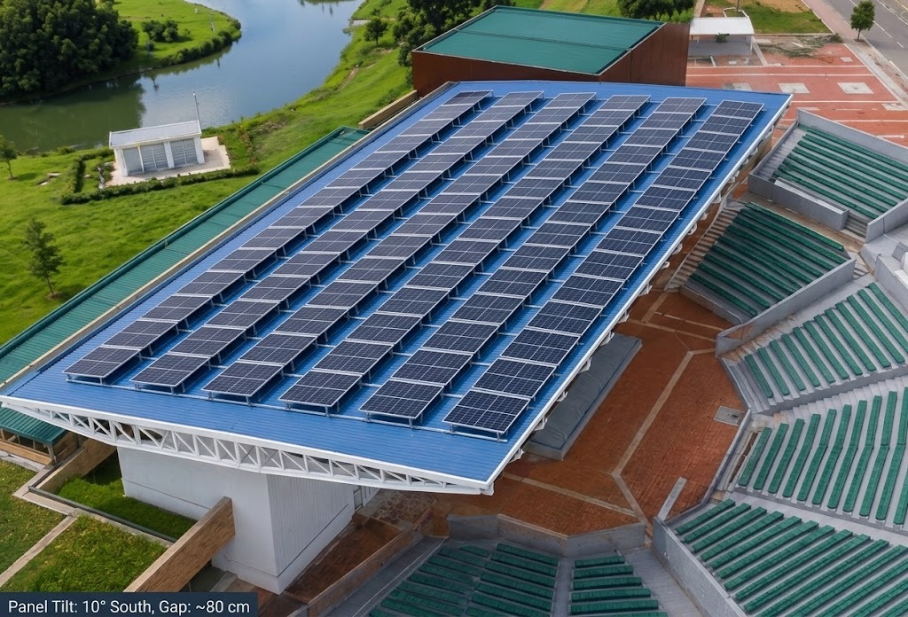
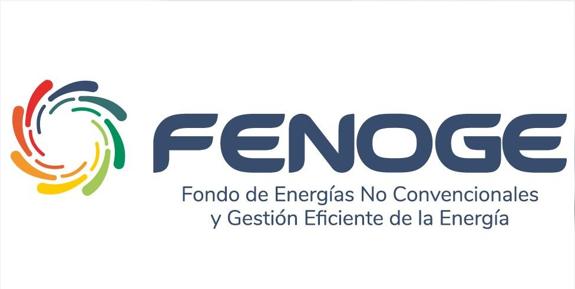
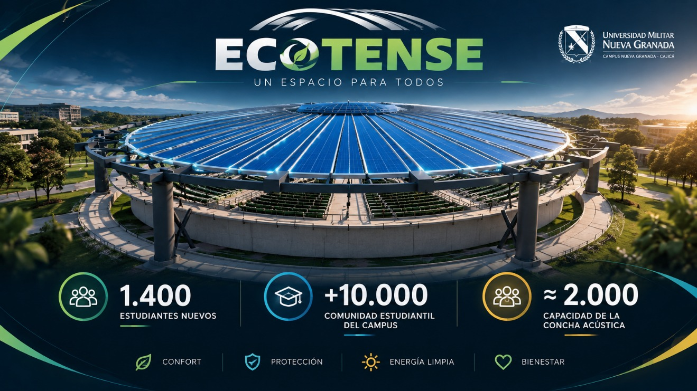

Portada
KINETIX
Dynamic Systems
«"Donde la precisión mecánica y la visión digital optimizan el futuro industrial."»
- Samuel Esteban Sánchez Álvarez
- Justin David Mendoza Ortiz
- Santiago García Fajardo
- José Arturo Aguirre Chaparro
Universidad Militar Nueva Granada — 2026
¿Quiénes somos?
KINETIX
Dynamic Systems
Empresa de ingeniería y tecnología enfocada en:
- Soluciones de infraestructura
- Automatización
- Sostenibilidad
- Innovación tecnológica
Nuestro proyecto: EcoTense
Tres ingenierías
Tres ingenierías
Mecatrónica
- Automatización
- Sensores
- Actuadores
- Control del sistema
Industrial
- Optimización
- Materiales
- Riesgos
- Mantenimiento
Multimedia
- Marketing
- Identidad visual
- Contenido digital
- Comunicación de la empresa
Problema
Concha acústica UMNG
Problema principal: exposición a lluvia y viento.
Esto provoca:
- Interrupción de eventos
- Limitación del uso del espacio
- Deterioro de infraestructura
- Afectación a asistentes y equipos
Nuestra solución
EcoTense
Cubierta retráctil inteligente
Apertura y cierre automatizado
Protección superior y lateral
Sensores climáticos
Alimentación solar
Membrana de PET reciclado

¿Cómo funciona?
Sistema EcoTense
1 Lluvia / viento
2 Sensores
3 Sistema de control
4 Despliegue / retracción
5 Protección del espacio
Energía: sistema fotovoltaico + almacenamiento energético
Sostenibilidad
Sostenibilidad
- ♻️ PET reciclado: aprovechamiento de material proveniente de la planta de tratamiento universitaria.
- ☀️ Energía solar: alimentación mediante sistema fotovoltaico.
- 🔄 Economía circular: transformación de residuos en nuevos recursos.
Resultado: infraestructura + tecnología + sostenibilidad.



Cierre
KINETIX
Dynamic Systems
EcoTense
Protegemos espacios. Automatizamos soluciones. Construimos un futuro sostenible.
«“Donde la precisión mecánica y la visión digital optimizan el futuro industrial.”»